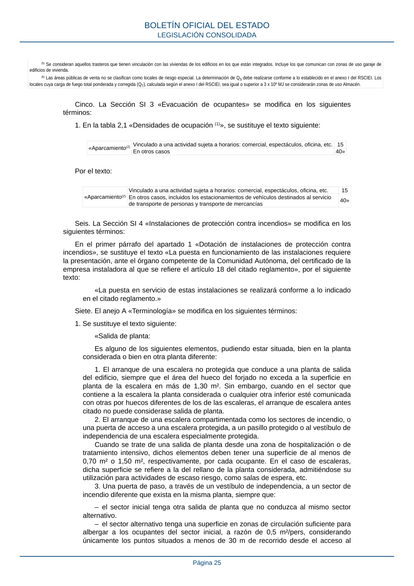

RSCIEI · Página 25 · versión 2025-04-10
SHA256: 85aa0af25d51e5b58d8975a4eefbf76d3f57a8933445cfe814ae9c4818a2e3e7 · página física 25 de 108 · métodos de encabezado
solo si están cotejados.
Formatos: Markdown · JSON de bloques · PDF p. 25 · imagen PNG
(5) Se consideran aquellos trasteros que tienen vinculación con las viviendas de los edificios en los que están integrados. Incluye los que comunican con zonas de uso garaje de edificios de vivienda. (6) Las áreas públicas de venta no se clasifican como locales de riesgo especial. La determinación de QS debe realizarse conforme a lo establecido en el anexo I del RSCIEI. Los locales cuya carga de fuego total ponderada y corregida (QT), calculada según el anexo I del RSCIEI, sea igual o superior a 3 x 106 MJ se considerarán zonas de uso Almacén. Cinco. La Sección SI 3 «Evacuación de ocupantes» se modifica en los siguientes términos: 1. En la tabla 2,1 «Densidades de ocupación (1)», se sustituye el texto siguiente: «Aparcamiento(2) Vinculado a una actividad sujeta a horarios: comercial, espectáculos, oficina, etc. 15 En otros casos 40» Por el texto: «Aparcamiento(2) Vinculado a una actividad sujeta a horarios: comercial, espectáculos, oficina, etc. 15 En otros casos, incluidos los estacionamientos de vehículos destinados al servicio de transporte de personas y transporte de mercancías 40» Seis. La Sección SI 4 «Instalaciones de protección contra incendios» se modifica en los siguientes términos: En el primer párrafo del apartado 1 «Dotación de instalaciones de protección contra incendios», se sustituye el texto «La puesta en funcionamiento de las instalaciones requiere la presentación, ante el órgano competente de la Comunidad Autónoma, del certificado de la empresa instaladora al que se refiere el artículo 18 del citado reglamento», por el siguiente texto: «La puesta en servicio de estas instalaciones se realizará conforme a lo indicado en el citado reglamento.» Siete. El anejo A «Terminología» se modifica en los siguientes términos: 1. Se sustituye el texto siguiente: «Salida de planta: Es alguno de los siguientes elementos, pudiendo estar situada, bien en la planta considerada o bien en otra planta diferente: 1. El arranque de una escalera no protegida que conduce a una planta de salida del edificio, siempre que el área del hueco del forjado no exceda a la superficie en planta de la escalera en más de 1,30 m². Sin embargo, cuando en el sector que contiene a la escalera la planta considerada o cualquier otra inferior esté comunicada con otras por huecos diferentes de los de las escaleras, el arranque de escalera antes citado no puede considerase salida de planta. 2. El arranque de una escalera compartimentada como los sectores de incendio, o una puerta de acceso a una escalera protegida, a un pasillo protegido o al vestíbulo de independencia de una escalera especialmente protegida. Cuando se trate de una salida de planta desde una zona de hospitalización o de tratamiento intensivo, dichos elementos deben tener una superficie de al menos de 0,70 m² o 1,50 m², respectivamente, por cada ocupante. En el caso de escaleras, dicha superficie se refiere a la del rellano de la planta considerada, admitiéndose su utilización para actividades de escaso riesgo, como salas de espera, etc. 3. Una puerta de paso, a través de un vestíbulo de independencia, a un sector de incendio diferente que exista en la misma planta, siempre que: – el sector inicial tenga otra salida de planta que no conduzca al mismo sector alternativo. – el sector alternativo tenga una superficie en zonas de circulación suficiente para albergar a los ocupantes del sector inicial, a razón de 0,5 m²/pers, considerando únicamente los puntos situados a menos de 30 m de recorrido desde el acceso al BOLETÍN OFICIAL DEL ESTADO LEGISLACIÓN CONSOLIDADA Página 25
